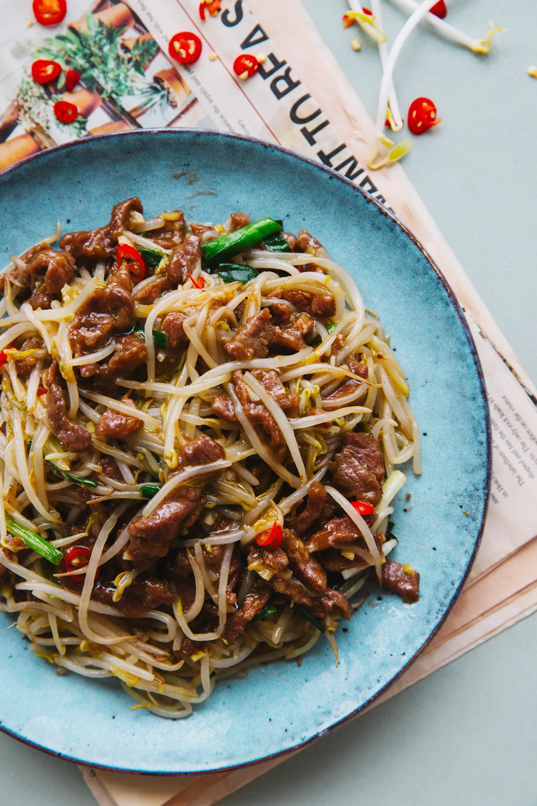
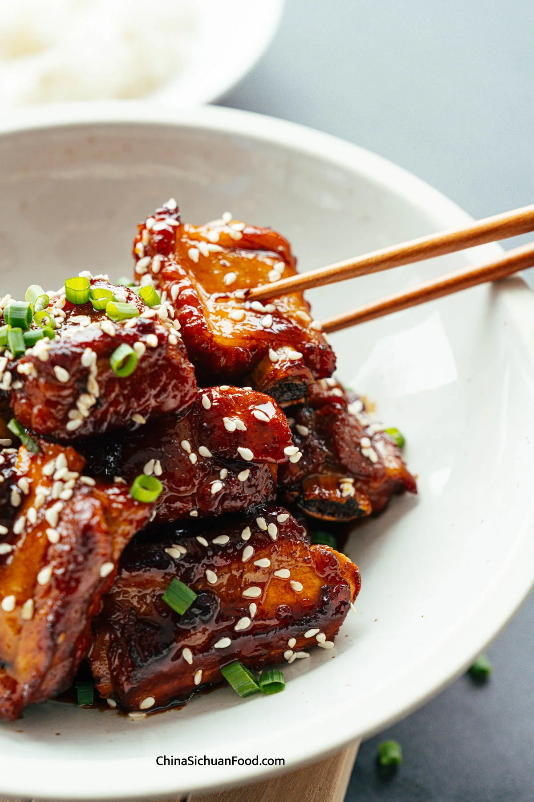

Pork Recipes
1. Red Braised Pork Belly (Hong Shao Rou)

Ingredients:
- 500g Pork belly
- 3 tablespoons Soy sauce
- 2 tablespoons Brown sugar
- 1 star anise
- 1 piece Cinnamon stick
- 1/2 cup Water
- 1 tablespoon Rice wine
- 1 tablespoon Ginger, sliced
- 1/4 cup Scallions, chopped
Instructions:
- Cut the pork belly into small cubes. Heat a pan and sear the pork on all sides until browned.
- In a separate pot, heat oil and add sugar until caramelized. Add the soy sauce, rice wine, and water, then bring to a boil.
- Place the browned pork in the sauce, add star anise, cinnamon, ginger, and scallions. Simmer for 45 minutes to an hour, until the sauce thickens and the pork becomes tender.
- Serve hot with steamed rice.
2. Sweet and Sour Pork

Ingredients:
- 400g Pork tenderloin
- 1/4 cup Vinegar
- 2 tablespoons Soy sauce
- 2 tablespoons Sugar
- 1/2 Bell pepper, sliced
- 1/4 Onion, sliced
- 1/2 cup Pineapple chunks
Instructions:
- Cut the pork tenderloin into bite-sized pieces and coat with cornstarch. Fry the pork until golden brown and crispy.
- In a separate pan, combine vinegar, soy sauce, and sugar to make the sweet and sour sauce. Bring it to a boil.
- Add the bell pepper, onion, and pineapple chunks to the sauce. Stir in the fried pork and cook for an additional 2 minutes to coat the pork in the sauce.
- Serve with steamed rice.